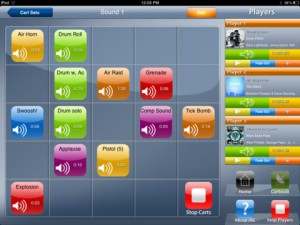
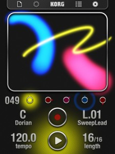
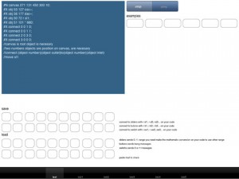
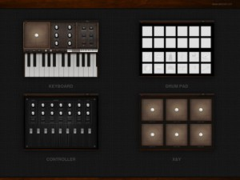
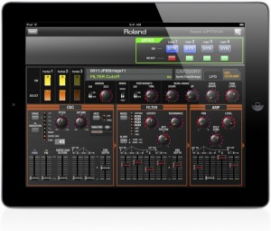
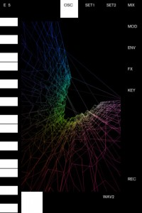
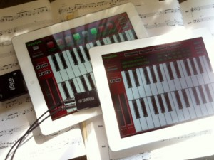

[appext 516661160]iAC is a fully customizable Audio Cartwall designed for all iOS devices, ideal for jingles, sound FX and custom tracks.
Based on software used by world-class professionals, iAC gives full control of multiple tracks with a few simple taps.
With the ability to display multiple tracks at once, iAC gives full control without the need for fiddly PC software.
This extremely versatile application is suitable for a whole multitude of uses, from amateur to pro, including:• Creating your own sound board
• Assigning your favorite tracks for quick and easy playback
• Playing sound effects and jingles effortlessly
• Mixing audio clips together seamlessly
• Fading audio samples out at the tap of a fingeriAC was built for professional DJ’s and broadcasters who like to carry their sound walls around with them in their pocket.
The App can hold an unlimited number of cart sets (in-App purchase) in which you can edit sounds on each Cartwall. It comes with a fantastic feature to ‘import’ your own sounds or iPod tracks.Simply load the tracks in the player section and use the Cartwall to play ‘Instant’ sound effects into your set.
This application will be free to download, with optional in-App Purchases to remove restrictions
iAC Features
(iPhone)Unlimited Cart Sets
Import iPod Tracks Feature
3 Players For Imported Tracks/Sounds
Play/Pause & Fade Out Feature on Players Screen
Volume Control
Stop All Function on Players Screen
16 Editable Carts To Load Audio Onto Cartwall
6 Colors To Choose To Customize Your Cartwall
12 Pre-Loaded Sound Effects
Search Function To Find Audio In The ‘Imported’ Section
Links To Website & Twitter Page (@IAC_Cartwall)(iPad)
Unlimited Cart Sets
Import iPod Tracks Feature
3 Players For Imported Tracks/Sounds On Same Page As Cartwall
Play/Pause & Fade Out Feature on Players With Individual Volume Control
25 Editable Carts To Load Audio Onto Cartwall
6 Colours To Choose To Customise Your Cartwall
12 Pre-Loaded Sound Effects
Search Function To Find Audio In The ‘Imported’ Sectionmore info – http://www.audiocartwall.com/
Instant Audio Cartwall Soundboard Free
KORG iKaossilator update & sale
If you’re still to get your musical fingers on Korg’s entertaining iKaossilator, now is the time as the company is celebrating the app’s latest update with a 50% off sale on all of its iOS apps! Read on for the details –
[appext 452559831]In celebration of the release of iKaossilator v2.1, Korg is offering iKaossilator at $9.99 USD – a 50% savings – until May 7, 2012.
In addition, Korg’s entire selection of top-selling apps, including iMS-20, iElectribe and iElectribe Gorillaz Edition are available at 50% off their regular price until May 7th, 2012.
Now is your chance to grab some of the most talked-about music-making apps out there at an unbeatable price!What’s new
iKaossilator Version 2.1 Highlights
● Audio Loop Import
● Seamless operation in tandem with the Kaossilator 2
● Support for “AudioPaste”– New Audio Loop Import function
Audio loop files can now be imported into each part of the sequencer. iKaossilator v2.1 has evolved into an app that provides not just MIDI loop sequencing, but also audio loop sequencing! To import, simply send your audio loop* via iTunes to iKaossilator and load it via the import menu in the sound list (the sound selection screen).In addition to simply playing an imported audio loop, you can use a filter effect assigned to the touch pad to vary the character of the song just as you would on the Kaoss Pad. This represents a nearly infinite expansion of iKaossilator’s track-making and performance potential.
* Supported file formats: WAV, AIFF, MP3, AAC
– Seamless Integration with Kaossilator 2
The Audio loop import feature also enables closely coupled operation with iKaossilator’s sibling — the “Kaossilator 2”. Loop recorder data created with a Kaossilator 2 can be imported into iKaossilator, or an audio loop created in iKaossilator can be loaded into a loop recording bank of the Kaossilator 2. When you do this, data such as the loop length and the BPM of the loop that you created is also loaded; resulting in a seamless transfer between the software and hardware.– Support for “AudioPaste”
iKaossilator now supports the “AudioPaste” function that was developed by Sonoma Wire Works, which allows audio data to be copied and pasted between iOS apps. You can export audio data from the Korg iELECTRIBE or iMS-20, or from any “AudioCopy” compatible app, and then import it into iKaossilator with ease.
MIDIWriter
…Another quirky app to round out the end of the week!
MIDIWriter is a simple app that transmits MIDI note messages by hitting keys on a keyboard.
You can use either the on-screen software keyboard or a Bluetooth/Dock-connected hardware keyboard for iOS.
To actually hear sound, a CoreMIDI sound generator app must be running in the background. Compatible sound generator apps include ThumbJam, Animoog, NLog MIDI Synth, NLog Synth Pro, bs-16i, SunrizerXS synth, Sunrizer synth, and Anaphobia Mini. You can also play sounds via an app running on another iOS device, or via a MIDI Network Session running on a Mac.
[appext 520751563]
textsound
This one won’t be for everyone, but it’s good to see the development platform coming to iPad.
[appext 500491526]textsound turns your iPad in a powerful audio develop environment based in puredata.
Write, edit, load, run and test pd patches.
Control your code with the predefined interface.
Save your texts.textsound:
Use your device for audio development.
Edit and control your desktop pd patches directly on your device.
Create synths, sequencers, music estudios, generative music, etc only with your iPad.
Build in desktop or in device yours own custom iPad instruments.
Run in your desktop your iPad patches.
Make your own midi, osc controllers.
And more…Note: There’s also a free version of this app available to try out.
CrossDJ for iPad inbound
MixVibes is proud to present the most exciting DJing application we have ever made: CrossDJ for iPad. MixVibes brings a comprehensive iPad DJing experience with a user friendly yet professional and feature rich layout. This application allows all DJs to enjoy performing quality sounding mixes on an iPad.
CrossDJ was developed by the same professional software team who developed Cross, awarded best DJing software in 2010 and 2011 at Paris MIXMOVE awards. MixVibes has been providing DJs with professional solutions for over 10 years. Hence, no other iPad DJing application has ever received such expertise, attention to ergonomics and user feedback in its developmentA complete DJing tool, CrossDJ is a full-fledged DJing controller. It features a full 2-channel mixer with 3-band EQs and Kills, preset Loops, 6 Locators, High-precision audio FX with X/Y control pad and much more. These professional features are what will no doubt make this application a reference in the DJing Market.
In addition, CrossDJ takes advantage of the iPad/iPhone media management paradigm with a fluid, rapid and intuitive browsing and loading. You can easily access all iTunes playlists and browse media using a Dynamic Triple Criteria Filter.
The audio stream can be split in order to be able to monitor tracks with headphones which is essential for a professional mix.Grab the full details here – http://www.mixvibes.com/content/crossdj-ipad
DJ Rig update drops
IK Multimedia’s new dance music mixing app, DJ RIG, has not only received an update this week, but has also been released in FREE ‘lite’ version as well, and with the upcoming release of the company’s iRIG MIX DJ mixing controller, now is the time to pick up this app and get some practise in.
The key updates for version 1.0.2
– Fixed issues that caused the app to crash on some devices
– Fixed an issue that sometimes caused the app to crash when managing large song libraries
– Fixed orientation issues when rotating the device
– Fixed an issue with cue positioning
– Fixed an issue with no space left on the device
– Optimized filters and search song library functions
– Improved kill EQ response
– Background Audio disabled by default
– General reliability improvements
DJ Rig FREE is missing some of the key features in the full app. although these can be unlocked with in app purchases –
An upgrade to the full version is available as in-app purchase for $4.99/€3.99 and includes looping, 5 effects (Band Pass Filter, High Pass Filter, Delay, Stutter, Phazer)? and 7 sound banks (Drones, Hoovers, Instrument Hits 1, Stabs 1, Synth 1, Vocals 1, Classic FX). The regular paid version of the DJ Rig app with all these features already included is also available in the iTunes store for the same price.
A Pro bundle pack is available for the users of the full version as in-app purchase for $4.99/€3.99 and includes: multiple cues, digital deck skin, 6 effects (Flanger, Comp, Fuzzy, Reverb, Auto Wah, Crush) and 7 Sound Banks (Atmo FX, Animals FX, Instrument Hits 2, Instrument Hits 3, Synth 2, Stabs 2, Vocals 2).
For more details, check the official site – www.djrig.net
[appext 478831367]Midi Studio
Midi Studio it’s great midi controller for your home or professional studio. WIth this application you can play on a virtual keyboard, move faders, knobs, play with drums pad. One of the best feature of this application, it’s playing your notes with velocity sensitivity, you can hit the screen, stronger or weaker. Also you can change modulation using the surface of the keys, you can change a pitch, you can use built-in arpeggiator and many other interesting features.
Midi Studio Features:
-[CoreMidi]
-[WI-FI]
-[USB]
-[True Velocity Sensitive ] (with the force of impact)
-[Modulation]
-[Drums]
-[Faders]
-[Knobs]
-[Buttons]
-[Touch pads]
-[Two Keyboards]
-[Different Keys Size]
-[Custom Key Scale] – (Like: Major, Minor, Klezmer, etc…)
For set up and configuration details, check the developer’s site – http://www.wiksnet.com/
[appext 519720275]Free iPad 2 with Jupiter-80
This may not apply to everyone (especially outside the UK), but I thought it was still worth a mention, especially if you’re in the market for one of Roland’s new live performance synthesizers, the Jupiter-80. It appears there is a special incentive running at the moment where new owners of this synth also pick up a free iPad2. The promotion is no doubt a tie-in with the upcoming launch of the JP Synth Editor App, which enables players to edit Jupiter-80’s SuperNATURAL synth tone.
For more details on this promotion, check Roland’s UK site .
HyperSpace 3D Synthesizer = Hypnotic
HyperSpace, the waveform-sculpting 3-D oscilloscope synth is the latest edition of our Space series.
HyperSpace uses a unique algorithm to generate endless mesmerizing images from sound. It works similarly to a harmonograph, but uses its 3 voice oscillators instead of pendulums to create images. Each oscillator is mapped to a dimension in 3-D space. Playing a single note creates a wave, like on an ordinary oscilloscope. Playing two notes at once creates a plane as with the harmonograph, and playing a three note chord creates a volume.
There are two oscillators to crossfade between. These can be set to standard shapes as with older synths, but HyperSpace also lets you sculpt the waves with touch! Changing the wave shapes of course alters the sound, but it also alters the generated imagery. The variety of imagery generated with this simple algorithm is truly astonishing.
Features:
• Selectable keyboard scales for easier jams
• Fat keys option for fat fingers
• Three voice polyphony
• Two LFO modulators
• Lowpass filter effect
• Echo effect
• Audio Copy
• iTunes file sharing
• Works on iPad and iPhone 4s/4/3GS
[appext 516000628]
WaveSynth Pro
WaveSynth Pro is “easy and full-fledged musical instrument app specialized in performance”, a wave table, 16 multi-timbral synthesizer application for iPad with 128 preset sound tones and 1 drum set defined by General MIDI specification.
WaveSynth Pro has 2 mode for playing various musical instruments sound tone such as piano, guitar, trumpet, strings, flute, drums, percussions and so on.
“Performance Mode”: Playing 2 layered instruments. 4 presets stores each instrument and various parameters.
“GM Mode”: Recommended for playing GM compatible MIDI files. Instrument and parameters of each part can be edited, and performance of each part is also displayed.The keyboard can be selected by 1 octave keyboard or 2 octave keyboard on the display. In every sound tone, most suitable octave is assigned automatically or to be chosen by manual.
Also touch velocity support using accelerometer allows rich performance.
In addition to normal keyboard play, various expressions could be added by the Pitch Bend Controller, Portamento, Mono Mode.Also WaveSynth Pro supports CoreMIDI compatible MIDI interfaces for full 16 channel MIDI Input / Output. Please use your iPad as a perfectly GM sound module !
Specifications:
* 128 preset sounds and 1 drum set defined by General MIDI specification
* Performance Mode / GM Mode
* Touch Velocity Supported
* Pitch Bend Change Control
* Portamento On / Off
* Mono Mode On / Off
* Hi-Quality Reverb / Chorus / Delay Effect
* Supported CoreMIDI compatible MIDI Interfaces
* 16 Part Multitimbral
[appext 510876116]